Salut, je suis Yasmin Hadj-Said
Ingénieure Systèmes Microélectroniques & Informatique
Étudiante à l’École des Mines de Saint-Étienne et à HEC Montréal. FPGA, systèmes embarqués, robotique et administration des affaires.
voir les projets me contacter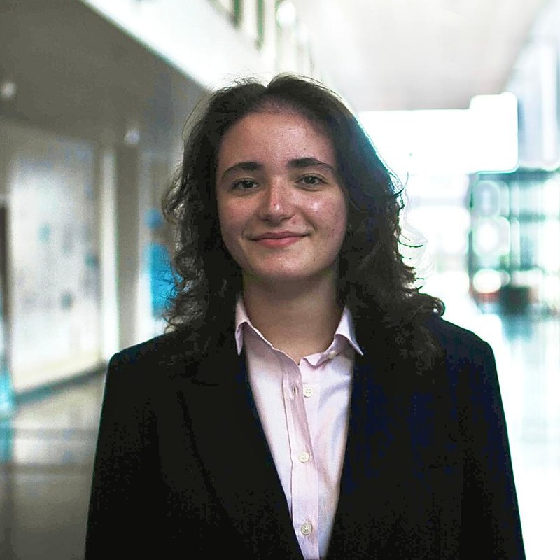
Étudiante à l’École des Mines de Saint-Étienne dans le cursus Systèmes Microélectroniques et Informatique, je suis en train de compléter ma formation avec un DESS en administration des affaires à HEC Montréal afin d’acquérir une double compétence technique et managériale.
-
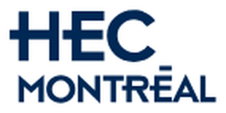
2026 – 2027
HEC Montréal
DESS en administration des affaires : double compétence technique et managériale.
-
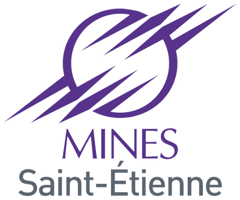
2024 – 2027
École Nationale Supérieure des Mines de Saint-Étienne
Cursus ingénieur Systèmes Microélectroniques et Informatique. Formation de prévention des violences sexistes et sexuelles (VSS).
-
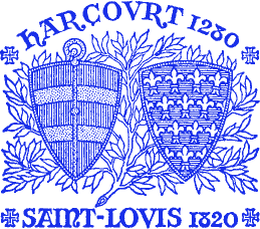
2021 – 2024
Lycée Saint-Louis, Paris
Classes préparatoires aux grandes écoles : MPSI, MP.
-
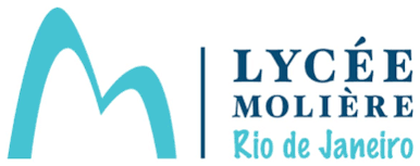
2020
Lycée Molière, Rio de Janeiro
Baccalauréat scientifique, mention Très Bien, major de promo.
-
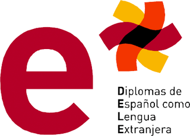
2019
DELE, niveau B2
Diploma de Español como Lengua Extranjera.
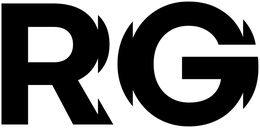
Avril – juillet 2026
Stage · Renault
Outil de gestion et de monitoring pour l’Après-Vente.
Avril – juillet 2026
Stage · Renault
Outil de gestion et de monitoring pour l’Après-Vente.
- Conception et développement de bout en bout de la Control Tower OV360 pour le suivi des validations des outils de diagnostic à l’échelle internationale.
- Centralisation des activités France, Inde et Roumanie dans un seul espace de pilotage, avec suivi des dossiers et des étapes critiques.
- Automatisation du reporting et du pilotage via SharePoint, Power Automate, BigQuery et Looker pour optimiser le suivi des KPI et du Right First Time.
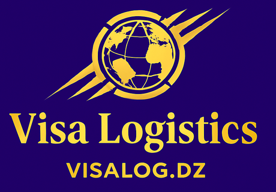
2025
Création d’entreprise
Cabinet conseil innovant en IA et mobilité internationale.
2025
Création d’entreprise
Cabinet conseil innovant en IA et mobilité internationale.
- Création d’un cabinet conseil axé sur l’intelligence artificielle appliquée à la mobilité internationale et aux services de conseil.
- Développement d’une proposition de valeur claire autour de l’optimisation des process, de la transformation digitale et de la stratégie de croissance.
- Mise en place des fondements de l’activité et des premiers cadrages commerciaux et opérationnels.
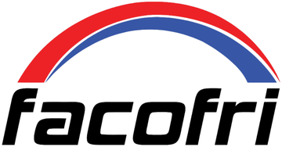
Juillet 2025
Stage · FACOFRI, Algérie
Automatisation et pilotage d’une presse plieuse.
Juillet 2025
Stage · FACOFRI, Algérie
Automatisation et pilotage d’une presse plieuse.
- Intégration d’un bras robotisé pour automatiser une presse plieuse et améliorer la précision du cycle de production.
- Développement d’un logiciel Python simulant le pilotage d’une presse plieuse, avec commande automatisée de pédale synchronisée à la simulation.
- Contribution au pilotage et à l’optimisation des opérations de production grâce à une meilleure maîtrise des flux et du temps de cycle.
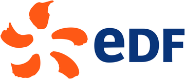
Janvier 2025
Stage · EDF, Colombes
Outil de gestion des demandes d’autorisation.
Janvier 2025
Stage · EDF, Colombes
Outil de gestion des demandes d’autorisation.
Direction Services Informatiques et Numériques, rattachée à la Direction Commerce (équipe CSC Supervision).
- Création d’un outil de gestion des demandes d’autorisation à l’échelle de l’équipe pour centraliser les procédures d’arrivée et de départ.
- Structuration du suivi des demandes et simplification des échanges entre les acteurs pour réduire les frictions et gagner en visibilité.
- Conception d’une solution pratique et conforme aux besoins opérationnels de l’équipe, avec un suivi clair des validations.
2019 – 2021
Soutien scolaire
Cours de mathématiques et de physique.
2019 – 2021
Soutien scolaire
Cours de mathématiques et de physique.
- Tutorat d’élèves de lycée en mathématiques et en physique pour renforcer leur compréhension des notions fondamentales.
- Accompagnement personnalisé dans la préparation aux contrôles et dans la progression sur le long terme.
2018
Stage · Filiale brésilienne d’EDF
Immersion dans une entreprise française à l’étranger.
2018
Stage · Filiale brésilienne d’EDF
Immersion dans une entreprise française à l’étranger.
- Découverte des différents secteurs d’une entreprise : finance, production, RH, juridique et environnement.
- Immersion dans le fonctionnement d’une structure internationale et compréhension des enjeux de gestion d’une entreprise multiforme.
Février – mars 2026
Monitoring ECG sécurisé
Acquisition temps réel et chiffrement ASCON sur FPGA.
Février – mars 2026
Monitoring ECG sécurisé
Acquisition temps réel et chiffrement ASCON sur FPGA.
Ce projet de monitoring ECG sécurisé repose sur l’acquisition en temps réel et le chiffrement matériel de données médicales via une carte FPGA Zynq-7020.
Développé en SystemVerilog sous Vivado dans le cadre de mon cursus à l’École des Mines de Saint-Étienne, le système intègre une gestion précise des communications I2C et UART par machine d’états (FSM) cadencée à 50 MHz.
L’architecture s’articule autour d’un cœur de chiffrement matériel ASCON interagissant avec une RAM double port pour sécuriser les trames ECG à la volée.
En aval, la chaîne est complétée par un outil logiciel développé en Python qui comprend un émulateur matériel pour les tests, assure le déchiffrement des données et propose une interface graphique de monitoring en direct, capable d’analyser l’onde ECG, de détecter le complexe PQRST et d’afficher le rythme cardiaque en temps réel.
Février – mai 2025
Chiffrement ASCON-128
Implémentation matérielle de l’algorithme de chiffrement léger ASCON-AEAD128.
Février – mai 2025
Chiffrement ASCON-128
Implémentation matérielle de l’algorithme de chiffrement léger ASCON-AEAD128.
Conception et développement de bout en bout d’un circuit numérique en SystemVerilog pour garantir la confidentialité et l’authenticité des échanges de données.
Modélisation des différentes couches de permutation (addition de constantes, substitution par S-box, diffusion) et création d’une machine d’états pour piloter les quatre phases clés du processus.
Intégration de l’architecture globale et validation complète du système via des outils de simulation, pour assurer la fiabilité du circuit et le débogage des signaux.
Novembre – décembre 2025
Projet IoT
Système connecté de monitoring environnemental et de mesure de la qualité de l’air.
Novembre – décembre 2025
Projet IoT
Système connecté de monitoring environnemental et de mesure de la qualité de l’air.
Conception et développement de bout en bout d’un dispositif d’alerte IoT pour la prévention des risques, dédié au monitoring environnemental et à la mesure de la qualité de l’air.
Intégration matérielle de capteurs avec indicateurs LED et transmission des données sans fil via le réseau The Things Network (LoRaWAN).
Création de dashboards de supervision pour centraliser l’historique des mesures d’IAQ (Indoor Air Quality) et visualiser les données de qualité de l’air en temps réel.
Avril – juin 2026
Borne d’arcade Flappy Bird à contrôle capacitif
Borne portable et autonome avec une interface de jeu sans contact.
Avril – juin 2026
Borne d’arcade Flappy Bird à contrôle capacitif
Borne portable et autonome avec une interface de jeu sans contact.
Conception d’une borne d’arcade portable et autonome revisitant Flappy Bird avec une interface sans contact. Le joueur contrôle l’altitude de l’oiseau sur un écran OLED en approchant sa main d’une plaque en cuivre capacitive : plus la main est proche, plus le personnage monte.
Développement de l’architecture complète, de la conception du capteur à l’intégration finale. Réalisation du routage d’un circuit conditionneur sur PCB pour traiter le signal, puis programmation de l’acquisition et du filtrage des données sur un microcontrôleur STM32 NUCLEO-F301K8 et de la logique du jeu en C++ sur une carte NUCLEO-L432KC.
Intégration de l’électronique dans un boîtier compact inspiré du Minitel et modélisé en 3D, mobilisant des compétences en électronique analogique, en programmation embarquée et en intégration de systèmes.
Septembre 2024 – mai 2025
Coupe de France de Robotique
Conception d’actionneurs et amélioration mécanique des robots de compétition.
Septembre 2024 – mai 2025
Coupe de France de Robotique
Conception d’actionneurs et amélioration mécanique des robots de compétition.
Gestion de projet technique et coordination d’une équipe de 10 personnes pour concevoir un robot de compétition (respect du cahier des charges et des délais).
Conception du système de lancement des PAMIS (petits actionneurs mobiles indépendants), déclenché par un interrupteur magnétique.
Développement d’un actionneur répondant à la contrainte de la compétition (« faire la fête »).
Mise à jour de la modélisation 3D des robots pour résoudre les problèmes de fermeture du châssis et simplifier sa conception grâce à un système coulissant.
2024
Victoire au Hackathon
Compétition de robotique avec STMicroelectronics.
2024
Victoire au Hackathon
Compétition de robotique avec STMicroelectronics.
Compétition par équipe organisée par l’AREM avec STMicroelectronics, à Gardanne.
2024 – 2025
Étude de la glisse à ski
Modélisation et conception d’un simulateur de pente glacée.
2024 – 2025
Étude de la glisse à ski
Modélisation et conception d’un simulateur de pente glacée.
Étude théorique et expérimentale de la glisse d’un ski en laboratoire, avec conception et réalisation d’un dispositif de test simulant une pente glacée.
2023 – 2024
Étude des éoliennes Savonius
Analyse et test d’un prototype d’éolienne verticale.
2023 – 2024
Étude des éoliennes Savonius
Analyse et test d’un prototype d’éolienne verticale.
Étude théorique de l’écartement optimal entre les pales d’une éolienne verticale dans le contexte de l’urbanisme contemporain, suivie de tests sur une éolienne conçue et réalisée par nos soins.
Mon année d’engagement associatif a été marquée par une grande polyvalence, combinant leadership technique en robotique et implication sociale au sein de la vie étudiante. Ces responsabilités transversales m’ont permis de renforcer ma maturité en gestion de projet et en management d’équipe, tout en contribuant activement à l’inclusion et au dynamisme du campus.
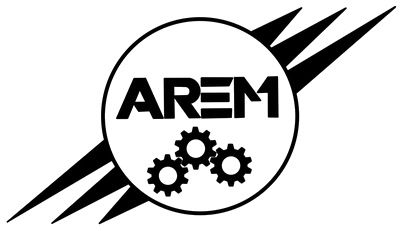
2025 – 2026
Présidente de l’AREM
Leadership technique et implication associative.
2025 – 2026
Présidente de l’AREM
Leadership technique et implication associative.
Association de Robotique et Électronique des Mines : leadership technique en robotique et implication dans la vie étudiante.
Management et gouvernance
- Équipe de 14 personnes, tenue des conseils d’administration.
- Prise de décision stratégique avec le bureau et délégation des tâches.
- Nouvel organigramme et entretiens de recrutement du mandat EI25 (environ 10 heures).
Partenariats
- Représentante légale et porte-parole auprès de l’école et des partenaires.
- Subvention FDVA de 2 300 € obtenue (dossier Mairie de Gardanne).
- Défense du budget de l’AREM auprès des autres associations étudiantes.
- Négociation avec des industriels majeurs, dont Alstom et STMicroelectronics.
Événements
- Coupe de France de Robotique (CDR) 2025, suivi de la préparation de la CDR 2026.
- Hackathon de programmation de robots : mise à jour et préparation des robots, supervision technique et accompagnement des participants pendant la compétition.
- Paquathon : co-organisation de la première édition (50 participants) avec le BDA et Solidar’ISMIN, à l’occasion de Pâques : logistique, animation et coordination des activités pour les étudiants et le personnel de l’école.
- Défi Actionneurs : conception et organisation d’un événement pédagogique en plusieurs séances pour initier les étudiants de première année à la robotique (prototype, supports explicatifs, encadrement des participants).
- Intégration : soirée AREM, comité d’intégration, « Famille Verte ».
Gestion de conflits
- Résolution de situations de crise et apaisement des tensions dans des environnements à forte pression, notamment lors de la Coupe de France de Robotique (CDR).
Communication
- Création et gestion de supports graphiques pour le public et les partenaires (kakémonos, dépliants, plaquette Alpha, plaquette partenariats), conception textile (T-shirts du mandat) et impression 3D des porte-clés des familles pour les activités d’intégration.
2025
Ingénieurs Solidaires en Action (ISA)
Gestion de projet pour une association d’accompagnement.
2025
Ingénieurs Solidaires en Action (ISA)
Gestion de projet pour une association d’accompagnement.
Gestion de projet pour l’Association Accompagnement Initiative (Gardanne) : journée bien-être pour des personnes à faibles revenus, avec contacts professionnels et entreprises donatrices, logistique, autofinancement et coordination des bénévoles.
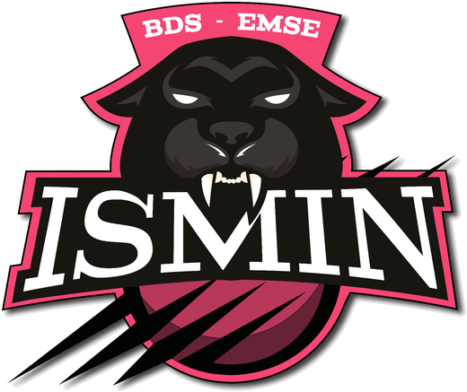
2025 – 2026
Capitaine · équipe féminine de volley-ball
Coordination d’équipe et planification.
2025 – 2026
Capitaine · équipe féminine de volley-ball
Coordination d’équipe et planification.
- Leadership sportif : coordination de l’équipe, motivation et gestion de la cohésion de groupe.
- Logistique : planification des créneaux d’entraînement et interface avec les équipes adverses pour la ligue universitaire.
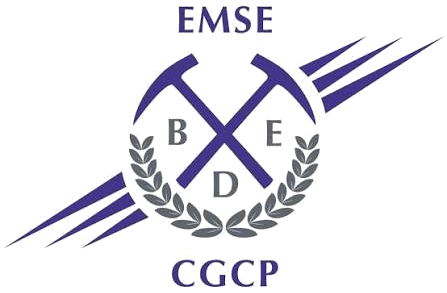
2025 – 2026
Bureau des Internationaux
Intégration des étudiants internationaux.
2025 – 2026
Bureau des Internationaux
Intégration des étudiants internationaux.
Membre actif du Bureau des Internationaux, club du Bureau des Élèves.
- Inclusion et accueil : participation à l’accueil et à l’intégration des étudiants internationaux.
- Accueil et intégration des étudiants internationaux, événements de promotion des cultures (repas internationaux).
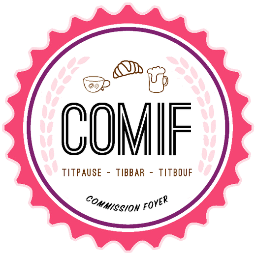
2025 – 2026
COMIF · T’ipause
Accueil et distribution à la cafétéria associative.
2025 – 2026
COMIF · T’ipause
Accueil et distribution à la cafétéria associative.
- Service et relationnel : accueil, service et respect des règles d’hygiène à la T’ipause (cafétéria associative).
- Distribution de repas aux étudiants du campus (rythme bimensuel).
2025
Sensibilisation et science
Fête de la Science et recyclage du plastique (PLA).
2025
Sensibilisation et science
Fête de la Science et recyclage du plastique (PLA).
- Broyage Extrême : sensibilisation au recyclage du PLA lors de la journée ODD.
- Fête de la Science : suivi de l’organisation sur plusieurs mois (d’avril à octobre), installation et gestion des stands.